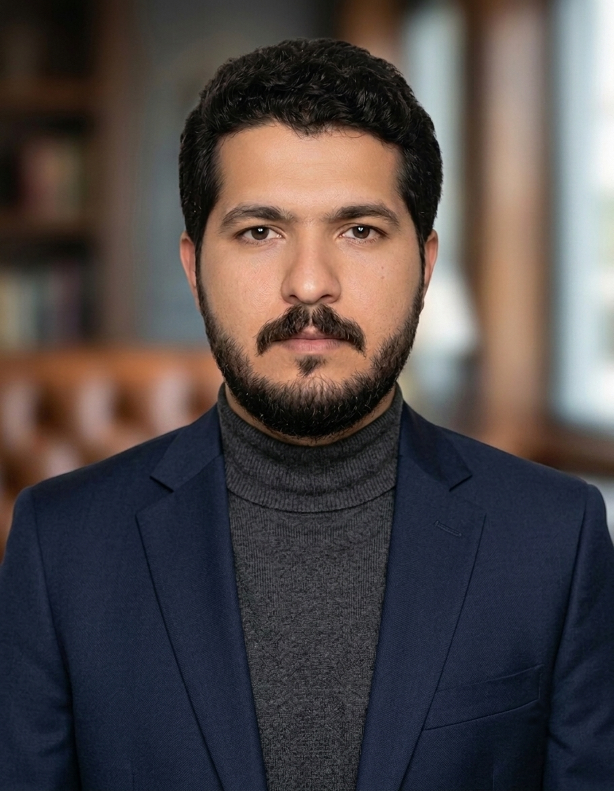

Results-driven biotechnology researcher with an M.Phil. (CGPA 3.77/4.00) specializing in AI-assisted agricultural diagnostics, molecular genetics, and plant biotechnology. Experienced in designing and executing laboratory-based research, field data collection, and integrating machine learning techniques with biological sciences.
Seeking research, academic, or industry opportunities where biotechnology and artificial intelligence can be applied to real-world agricultural and biomedical challenges — with a particular interest in pursuing a PhD that builds on this interdisciplinary foundation.
Work derived from M.Phil. thesis research, currently in preparation for peer-reviewed submission.
Download the complete curriculum vitae, including research experience, technical skills, and academic referees.
Download PDF